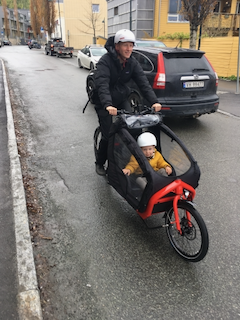
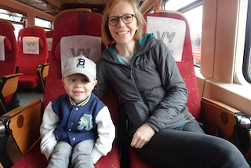

Christmas Letter 2019
Dear friends and family,
Merry Christmas and Happy New Year.
These are turbulent times, and this year we want to write a little about a subject that we usually have tried to stay away from. It is a subject that Siri and I associate with skepticism, some embarrassment and occasionally even fear. We are of course talking about sports. You see, Siri and I have no athletic abilities. A few years ago, Siri and I were out cross-country skiing, and she met a colleague on the trails. Based on Johannes’ skiing skills, the colleague had wondered if Johannes was an Iranian exchange student. Siri tries to stay away from football pitches because her head seems to exert a magnetic force on wayward footballs and she lacks the reflexes to evade these inflated homing missiles.
We fully expected our offspring to share in our aversion to sports. But to our great surprise and occasional horror, Bo not only shows an interest in athletics, but even sometimes a natural affinity for them. He loves kicking around a football, and the preschool reported that he was good at “centering” the ball. This made us proud, even though we have no idea what that means. We also take him to gymnastics practice each Saturday. He is not doing any back flips yet, but he does enjoy jumping, balancing and hanging on all the equipment. His latest passion is cross-country skiing. Siri found him some ski boots at a flea market, and he insisted on them accompanying him to bed the first week. We got a dusting of snow in early November, and had to get some skis, bindings and poles to go along. We can now report he is an enthusiastic skier who is already fast approaching our own skill level (which isn’t saying much.) He does however sometimes get lazy when skiing, and orders us to carry him.
Beyond sports, we can report a year of mostly good health and good cheer. Bo continues to love his preschool. He recently told his father that he wished he could always be at preschool. Siri stays busy working with international students and internationalisation. Johannes still teaches his classes in economics and writes academic articles no one reads.
We wish you all a restful and joyful holiday season and wish you all the best in the new year and new decade!
Best wishes
Bo, Siri and Johannes
 